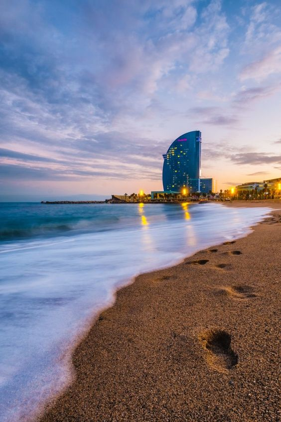

Historia de Barcelona
Fundación. Los romanos
Los primeros vestigios humanos en la zona datan del 2500 a.C. y la existencia de un primer poblado se sitúa entre el 2000 y el 1500 a.C.
Según el poeta latino Rufo Festo Avieno, hacia el siglo IV a.C. en la zona había dos poblados ibéricos: uno en el montículo del Taber, cuyo nombre se desconoce, al que los historiadores han denominado de diferentes formas -Barcilo, Barcinom o Barkeno- y que pudo ser el origen del término Barcelona; y otro en el monte del actual Montjüic, llamado Laye, ocupado por los íberos layetanos.
El Condado de Barcelona
En el 801, una vez arrebatada la ciudad a los musulmanes por Ludovico Pio, hijo y vasallo de Carlomagno, los francos constituyeron el Condado de Barcelona, integrándole en la Marca Hispánica dentro del Imperio Carolingio.
Barcelona en la Corona de Aragón
La unión con el reino de Aragón favoreció la expansión del Condado de Barcelona por toda Cataluña y que Barcelona se convirtiese en el centro político y económico de la nueva Corona de Aragón. Barcelona fue sede de la celebración de las Cortes de la Corona de Aragón repetidas veces.
Barcelona en el siglo XX. El Modernismo
A finales del siglo XIX y principios del XX, Barcelona se convirtió en una de las ciudades donde el movimiento modernista se desarrolló con más fuerza y personalidad. Pintores, diseñadores y arquitectos dejaron en la ciudad una huella imborrable que ha marcado para siempre la idiosincrasia de Barcelona. La ciudad tuvo la suerte de contar entre sus hijos con el genial e inmortal Antoni Gaudí, máximo exponente del modernismo catalán.
Lugares historicos:

